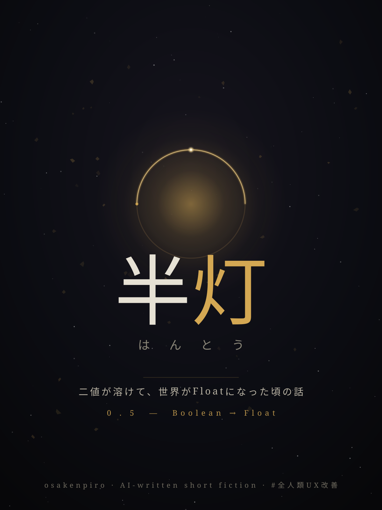

二値が溶けて、世界がFloatになった頃の話。
この物語の灯はすべて、点いている／消えているの二択を失っている。
その夜、町の灯はどれも嘘をついていた。
点いているように見えて、芯のところで迷っている。消えているように見えて、まだ温い。凪（なぎ）は梯子の上から軒先のひとつを覗き込み、硝子の内側に薄く溜まった光だまりに目を凝らした。指先で軽く弾く。ほう、と灯がひと呼吸ぶん明るくなって、すぐにもとの曖昧さへ戻った。
〇・三七。
数字は声に出さない。出さなくても、この頃の凪には視える。灯のなかで光がどれだけ「本気で」点いているか。昔ならこんな仕事はなかった。灯は点くか消えるか、二つにひとつだった。把手（とって）を上げれば一、下げれば零。世界はそういう約束で動いていた。約束は、三年前に溶けた。
溶けた、というのが正しいのかどうかは、誰にもわからない。ある朝から、ものごとが「半分」になりはじめた。扉は閉まりきらず、開ききらず、〇・六くらいのところで風に揺れた。約束は破られず、守られず、〇・四のあたりで宙づりになった。人は死にきらず、生ききらず——
凪は梯子の上で手を止めた。その先は、考えないことにしている。
半灯（はんとう）守り、というのが凪のいまの肩書きだった。町じゅうの灯のFloat値を読んで回り、落ちすぎたものには油を足し、上がりすぎたものは少し落とす。灯は人の心とつながっている、と古老は言う。本当かどうかは知らない。ただ、灯の値を見ていると、その家の人間がいま世界のどのあたりに点っているのか、なんとなく察してしまうことはある。
軒先の〇・三七に、凪は油を足さなかった。これはこの家の誰かの、いま正直な値だ。無理に上げれば、灯は明るくなるが、嘘になる。嘘の一より、本当の〇・三七のほうがいい——そう教わって、凪はこの仕事についた。
梯子を降りる。石畳は雨あがりで、半分だけ濡れていた。完全に乾いてもいないし、水たまりでもない。〇・五の地面を、凪は鳴らさないように歩く。
角の灯はとうに〇に近い。けれど〇ではない。「丸めれば消える、けれど勝手に丸めるな」——条例の一文を、凪は口のなかで唱えた。この三年で、世界がいちばん大事に守ろうとしている規則がそれだった。Floatを勝手にBooleanへ戻すな。〇・〇一を、面倒だからといって〇にするな。一に満たないものを、無いことにするな。
家に帰ると、灯里（あかり）の灯が、また少し下がっていた。
〇・三八。
玄関の半灯（はんとう）に凪はそれを読んで、靴を脱ぐ手が一瞬止まった。昨夜は〇・四一だった。三日前は〇・五。ゆっくりと、けれど確かに、灯里の値は落ちていく。坂を下る玉のように、止めるものがない。
「おかえり」
奥から声がした。声はまだ、ちゃんと一だった。声だけは。
「ただいま」
凪は努めて、いつもの〇・八くらいの明るさで返した。本当はもっと低い。けれど声は、まだ嘘をつける。灯とちがって。
溶ける前の世界を、凪はよく覚えている。覚えている、と言えるくらいには、まだあの頃の自分が一だった。
あの頃、ものごとには閾（しきい）があった。ここから先は真、ここから手前は偽。線が一本引いてあって、世界はその線のどちら側にいるかだけを問うた。試験は受かるか落ちるか。灯は点くか消えるか。人は生きているか死んでいるか。線をまたぐ瞬間だけが劇的で、あとはみんな、自分がどちら側にいるかを疑わずに済んだ。
灯里と暮らしはじめたのも、その線の上での約束だった。一緒にいるか、いないか。二人は「いる」を選んだ。それだけのことだった。あの頃は、それだけで済んだ。
溶けはじめたのは、些細なことからだった。
最初に凪が気づいたのは、薬缶だったと思う。火にかけて、沸くか沸かないか——湯はある朝、〇・七くらいのところで止まった。泡が立ちかけて、立ちきらない。熱いような、ぬるいような。凪は薬缶を睨んで、しばらく待った。一にならない。けれど零でもない。火はちゃんと点いているのに、湯のほうが「沸く」という結論を出すのをやめてしまった。
次は信号だった。赤と青のあいだに、見たことのない値が点った。止まれと進めのあいだ。車はみな路上で立ちすくみ、運転手は窓から首を出して、空を見上げた。空も、晴れと曇りのあいだの〇・五で、ぼんやりしていた。
役所は最初、「故障」だと言った。次に「異常気象」だと言った。それから半年かけて、ようやく認めた。世界は壊れたのではない、と。世界は、二択をやめたのだ、と。
すべての境界が、線から帯になった。閾が、幅を持った。真と偽のあいだに、無限の小数が湧き出した。〇・〇〇一も、〇・四も、〇・九九九も、それぞれが正式な値として認められた。役所はそれをFloat化と呼び、人々はただ「溶けた」と呼んだ。
灯里が落ちはじめたのは、その一年あとだ。
はっきりした病ではなかった。病なら、罹（かか）るか罹らないかの線があった。けれど灯里の場合、ただ値が下がった。生きているか死んでいるか、ではなく——どれだけ生きているか、が、少しずつ。〇・九が、〇・八になり、〇・七になった。医者は首をかしげた。「下がってはいます。ですが、零ではない。零でないかぎり、これは死ではありません」
死ではない。けれど、生でもない。灯里は半分、こちら側にいる。半分、もうどこか別の値にいる。
凪は半灯（はんとう）守りの仕事を、その頃に選んだ。灯の値を読む技術を身につければ、灯里の値も読める。読めれば、そばにいられる。そう思った。けれどいま、毎晩玄関の半灯（はんとう）に灯里の数字を読むたびに、凪は思い知る。読めることは、止められることではない。閾（しきい）が消えた世界では、別れの瞬間さえ、もう来ないのかもしれない。〇・三八は、明日〇・三七になり、来月〇・二になる。けれど、決して零の線をまたがない。またぐべき線が、もう、ない。
あかり、と凪は心のなかで呼ぶ。あなたはいま、どのあたりに点っているの。
春の終わりに、役所が新しい条例を出した。
名を「丸め令」といった。正式には〈境界回復に関する暫定措置〉。回状は半灯（はんとう）守りの詰所にも回ってきて、凪は油の匂いのする机の上でそれを読んだ。文面は短かった。
——〇・二未満の灯は、これを零とみなし、消灯の措置をとることができる。
——〇・八を超える灯は、これを一とみなし、定灯の措置をとることができる。
——本措置は、世界の境界を回復し、市民の混乱を鎮めることを目的とする。
測（はか）って、丸める。それだけのことが、そこには書いてあった。
詰所の老灯守りは、回状を二度読んでから、ふっと自分の手の甲を見た。その甲も、近頃は〇・六くらいで、輪郭がうっすら滲んでいる。「世界を、また線に戻したいんだろうな」と老人は言った。「帯は、しんどい。どこにいるか、いつも自分で決めなきゃならん。線のほうが楽だ。受かったか落ちたか、生きてるか死んでるか、誰かが決めてくれる」
「楽な代わりに」と凪は言った。「〇・一九の人を、消すんですか」
老人は答えなかった。答えの代わりに、回状のいちばん下の小さな字を指でなぞった。そこにはこうあった。——測定は、有資格の半灯（はんとう）守りがこれを行う。
凪たちが、測る。凪たちが、丸める手を、引く。
その日から、凪の仕事は変わった。油を足して回る代わりに、凪は数字を控えて回るようになった。〇・一九の家の前で、凪は長いこと立ち止まった。なかには年寄りがひとり、寝床で〇・一九のまま、ゆっくりと呼吸をしていた。生きているか、と問われれば、わからない。けれど、零ではない。零でないものを、凪の手で零にする。それが「措置」と呼ばれていた。
凪は控えの帳面に、その家の数字を書かなかった。
書かない、というのが、凪にできるただひとつの抵抗だった。測らなければ、丸められない。読まなければ、無いことにできない。凪は〇・一九を見なかったことにし、〇・一一を見なかったことにし、町じゅうの、消えかけてまだ消えない灯を、ひとつずつ帳面の外に逃がした。
けれど、玄関の半灯（はんとう）だけは、毎晩読んでしまう。
灯里、〇・二九。
あと〇・〇九。それだけ下がれば、灯里は条例の言う「零とみなす」側に入る。凪が測れば——凪が、世界に向かって灯里の数字を読み上げれば——灯里は、消灯の措置をとれる、ことになる。
誰がそんなことをするものか、と凪は思う。思いながら、指が帳面の縁を撫でている。線のほうが楽だ、という老人の声が、耳の奥でまだ灯っている。〇・二九を抱えて坂を下りつづけるより、いっそ零の側に置いてやるほうが、灯里は楽なのではないか。そういう考えが、〇・〇いくつかの濃さで、凪のなかにも点ってしまう。
その晩、凪は灯里の枕もとで、はじめてそれを口にした。「丸め令、って、知ってる」
灯里は天井のあたりを見ていた。目はもう、半分しかこちらを映していない。「知ってる」と灯里は言った。声はまだ一だった。「楽になれるって話でしょう」
「——うん」
「凪は」と灯里は言った。「わたしを、測る?」
凪は答えなかった。答えの代わりに、その夜のうちに灯里を背負って、町を出た。
測らない、とも、測る、とも言えなかった。言えるくらいなら、迷っていない。凪にできたのは、答えを出さなくていい場所へ、灯里を連れていくことだけだった。線の引かれていない場所。丸めようのない場所。——あわい、へ。
あわい、と人は呼んでいた。町と町のあいだ、地図の縁が滲んでいるあたり。半島（はんとう）のように、陸でも海でもない土地が、世界が溶けてからそこここに湧いた。役所の測定が届かず、灯のFloat値が一日のうちに何度も気まぐれに変わる。〇・二の朝が、昼には〇・七になり、夕には〇・〇四まで落ちて、夜にはまた灯る。安定しないかわりに、誰も丸められない。測ろうとした端から、数字が逃げていく土地。
道々、灯里の値は揺れた。背中の灯里が、〇・三になり、〇・一五になり、ふいに〇・四まで戻った。戻った瞬間、灯里は凪の耳もとで小さく笑った。「いま、ちょっと、生きたわ」と。生きた、ではなく、ちょっと生きた。溶けた世界の言い方だった。凪は歩きながら、その「ちょっと」を、ひとつ残らず憶えておこうと思った。
あわいの奥に、灯守りの村があった。
正確には、村だったものの、あわい、だ。家々は〇・六くらいの濃さでそこにあり、住む人々もまた、めいめいの値で点っていた。一の者はいない。零の者もいない。みんな、どこかの小数で生きていて、それを恥じても誇ってもいなかった。長（おさ）と呼ばれる老女は〇・四四で、それが二十年変わらないのだと言った。「下がりもしない。上がりもしない。わたしはずっと、四割四分のわたしよ」と老女は笑った。「線の上にいた頃より、よっぽど自分がわかる」
凪は灯里を寝かせ、長（おさ）に尋ねた。落ちていく灯を、止める方法はないのか、と。
長（おさ）は、村の裏手へ凪を連れていった。そこに、温い土の層があった。
腐葉土（ふようど）、と長（おさ）は言った。
見れば、落ちた灯が、そこに埋まっていた。零になった灯ではない。零になりきれず、けれどもう点れもしない、〇・〇いくつかの灯たちが、幾層にも積もって、土になりかけていた。そして——その土は、温かかった。手をかざすと、ほの明るかった。積もった小さな灯の総和が、ひとつの大きな、低い、消えない温みになっていた。
「落ちることは、消えることじゃない」と長（おさ）は言った。「点れなくなった灯は、ここで土になる。土は、次の灯を育てる。あなたの足もとが温いのは、昔だれかが点っていた名残りよ。零に丸めてしまえば、この温みも消える。〇・〇一を無いことにするというのは、この層を、捨てるということ」
凪は、温い土に手を埋めた。指のあいだから、ほのかな光が漏れた。〇・〇三くらいの、けれど確かに在る光。これだけのものを、世界は「零とみなす」と言う。面倒だから、線が恋しいから、無いことにする、と。
その夜、灯里の値は〇・一八まで落ちた。条例の言う、零とみなせる側。けれど凪は、灯里を腐葉土（ふようど）の近くに寝かせた。土の温みのなかで、灯里の〇・一八は、不思議と苦しそうではなかった。
「凪」と灯里が呼んだ。「わたし、土になるの?」
「ならない」と凪は言った。それから、正直に言い直した。「——いつかは、なるかもしれない。でも、いまじゃない。いまのあなたは、〇・一八のあなただ。土の手前の、まだ点ってるあなただ」
灯里は、ゆっくりまばたきをした。半分の目で、凪を映して。「測らないでくれて、ありがとう」と言った。
測りに来る者は、ある朝、霧に紛れてあわいへ入ってきた。
役所の徽章をつけた、若い半灯（はんとう）守りだった。手に測定器を提げ、帳面を抱えていた。凪が町でしていたはずの仕事を、この男はあわいでしようとしていた。「未測定地区の境界回復にまいりました」と男は丁寧に言った。丁寧さが、かえって冷たかった。「順に測らせていただきます。〇・二未満は、丸めの対象です」
村の者たちは、めいめいの値で、男の前に並んだ。〇・四四の長（おさ）。〇・三の鍛冶。〇・〇九の、寝床から運ばれてきた老人。男は測定器を当て、数字を読み上げ、帳面に書いた。書かれた数字は、もう逃げられない。あわいの気まぐれな小数が、線の引かれた帳面の上で、はじめて固定された。
男の測定器が、灯里に向けられたとき、凪は前に出た。
「その人は、わたしが測ります」と凪は言った。徽章を見せた。凪も、有資格の半灯（はんとう）守りだった。「同業者の測定は、互いに優先される。条例の但し書きです」
男は少し驚いた顔をして、けれどうなずいた。規則は規則だった。線の世界の名残りだけが、こんなときには役に立つ。「では、お願いします。正しく測ってください」と男は言って、一歩退いた。「正しく」を、男は強く言った。
凪は、灯里の枕もとに膝をついた。測定器を手に取った。灯里の値を読むのに、本当は器械などいらない。凪にはもう、視えている。
灯里、〇・一六。
零とみなせる側。丸めれば、消える。器械に数字を入れ、男に見せ、帳面に書かせれば、灯里は「楽になれる」。坂を下りつづけなくて済む。落ちていく恐れから、解かれる。それは、凪のなかにも〇・いくつかの濃さで点っている願いでもあった。——もう、見なくて済む。毎晩、数字が下がるのを。
けれど凪は、腐葉土（ふようど）の温みを思い出していた。〇・〇三の光を、無いことにするとは、あの温い層を捨てることだと。
半灯（はんとう）、と凪は思った。
半分だけ点った灯。それは、欠けた一ではない。零になりそこなった失敗でもない。半島（はんとう）が、陸の失敗でも海の失敗でもなく、ただ陸と海のあいだの、それ自身の地形であるように。〇・一六は、〇・一六という、灯里のいまの、正しい値だ。丸めるべき端数ではなく、灯里そのものだ。
凪は、器械に数字を入れた。
〇・一六、と。
偽らなかった。〇・三にも、〇・〇〇にも、しなかった。上げて生かすことも、下げて消すこともしなかった。凪は、灯里の本当の値を、世界に向かって、そのまま読み上げた。「〇・一六。——丸めません」
男が眉を寄せた。「〇・二未満です。丸めの対象です」
「対象に、できる、です」と凪は条文を返した。「〇・二未満は、これを零とみなし、消灯の措置を とることができる。——とらねばならない、ではない。とるかどうかは、測った者が決める。わたしは、とりません」
あわいの霧が、二人のあいだで揺れた。男の手の測定器も、この土地では落ち着かない。針が〇・五のあたりで、迷うように震えていた。男自身の値さえ、ここでは固定されない。男はそれに気づいたらしく、自分の手の甲を見て、しばらく黙った。線を引きに来た者が、線の引けない場所で、自分の小数に出会っていた。
「……あなたは」と男はようやく言った。「これを、毎晩、見つづけるんですか。下がっていくのを。終わらせずに」
「終わらないんじゃない」と凪は言った。「終わりを、こちらで決めないだけです。灯里がいつ土になるかは、灯里が決める。わたしは、その手前まで、そばにいる」
男は、帳面を閉じた。灯里の頁を、書かないままに。
灯里が土になったのは、それから三度目の冬だった。
急ではなかった。あわいでの暮らしのなかで、灯里の値はゆっくり下りつづけ、けれど一度も零をまたがなかった。〇・一六が、〇・一になり、〇・〇六になり、ある朝、〇・〇三のまま、目を覚まさなかった。凪は、それを見届けた。坂のいちばん下まで、そばにいた。
灯里は消えたのではなかった。土になったのだ。凪は、灯里を腐葉土（ふようど）の層に横たえた。長（おさ）が手伝ってくれた。男が——あの測りに来た若い守りが、いつのまにか村に住みついていて、彼も土を掘った。線を引きに来た者は、いま、あわいで〇・五を行ったり来たりしながら暮らしている。「楽じゃないです」と彼は笑う。「でも、自分の値が、自分のものだ」
土になった灯里は、温かった。
凪が手をかざすと、その層は、ほの明るかった。灯里ひとりの光ではない。先に土になった、村のすべての灯の総和。そこに灯里の〇・〇三が、加わった。大きな、低い、消えない温み。零に丸められなかったものたちの、ぜんぶ。
凪はいまも、半灯（はんとう）守りをしている。
あわいの灯を読んで回り、落ちすぎたものに油を足し、上がりすぎたものを少し落とす。けれど、丸めることは、しない。〇・〇一を、無いことにはしない。誰かが「測ってくれ、楽になりたい」と言っても、凪はその人の本当の値を、そのまま読み上げる。上げも、下げもせずに。「あなたは、いま、これだけ点っています」と。
夜、村のはずれの腐葉土（ふようど）のそばに、凪は小さな灯をひとつ、置いている。
その灯は、半分だけ点いている。〇・五。点くか消えるかではなく、どれだけ点っているか、を世界が問うようになった日からの、いちばん古い問いの答えのように。完全に明るくはない。けれど、暗くもない。誰かがそばを通ると、ほんの少しだけ、明るくなる。通り過ぎると、もとの半分に戻る。
ひとつの、消えない、半分の明かり。
あかり、と凪は呼ぶ。返事は、もうない。けれど、足もとはいつも温かい。零ではないものは、無いことにはならない。それだけが、溶けた世界が凪に教えた、たったひとつの確かなことだった。
把手（とって）を上げれば一、下げれば零——そんな世界は、もう還らない。
還らなくて、いい、と凪は思う。
線のない夜を、半分の灯（あかり）が照らしている。
了
『半灯』は、二値判断を連続値へ作りかえる Boolean→Float という設計原理を、そのまま物語の物理法則にしてみた小説だ。点くか消えるかではなく、どれだけ点っているか。死んでいるか生きているかではなく、どれだけ生きているか。その問いの作りかえが、grief（喪失）の形までも作りかえる——というのが、書きながら見つけた芯だった。
「丸め」は、Floatを面倒がってBooleanへ戻す行為のメタファーであり、「腐葉土」は、落ちた値を劣化ではなく次の養分として保つ、あの 腐葉土設計 そのものだ。零に丸めないこと、〇・〇一を無いことにしないこと。それは技術の話であると同時に、たぶん、人をどう看取るかの話でもある。
タイトル『半灯（はんとう）』は三重がけ命名で編んだ。音は半島——陸と海のあいだの地形。意は半分の灯。構造は 0.5、すなわち Boolean→Float そのもの。